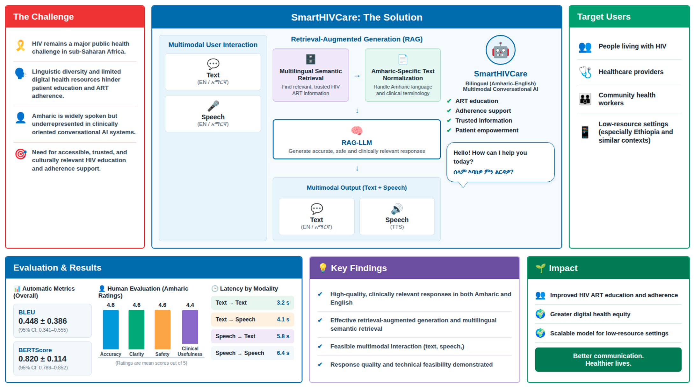

Belayneh Endalamaw Dejene
Bridging foundational artificial intelligence with clinical healthcare translation. Specializing in Explainable AI (XAI), predictive clinical decision support systems (CDSS), and digital twin simulations for maternal health and infectious diseases across sub-Saharan Africa.
Belayneh E. Dejene
Data Scientist & AI Researcher
Bridging Clinical Science with Modern Artificial Intelligence
An accomplished researcher, data scientist, and academic with end-to-end expertise in predictive modeling, explainable machine learning, and translating complex mathematical models into clinical and community products.
Belayneh Endalamaw Dejene holds a BSc in Information Science and an MSc in Data Science and Analytics from the University of Gondar, Ethiopia, and is currently pursuing his PhD in Data Science at Bahir Dar University. His research centers on the intersection of machine learning, healthcare analytics, and transparent algorithmic decision-making.
He serves as a Data Scientist and Analyst at Armauer Hansen Research Institute (AHRI) under the prestigious Data Science Without Borders (DSWB) initiative (funded by APHRC), and is a Lecturer and Researcher at the University of Gondar College of Informatics. Belayneh previously served as a Data Analyst at the Ethiopian Commodity Exchange (ECX), analyzing market volatilities and economic drivers.
As Co-Investigator on the March of Dimes Discovery Research Grant, Belayneh leads machine learning development and dynamic risk-stratification models for clinical decision-support systems aimed at preventing spontaneous preterm birth in routine antenatal care.
Data Scientist & Analyst (DSWB Fellow)
Lead data scientist under the Data Science Without Borders initiative analyzing regional clinical surveillance cohorts and predictive models.
Lecturer & Academic Researcher
Instruct undergraduate and graduate curricula in algorithms, programming, databases, and applied machine learning.
Co-Investigator, March of Dimes Discovery Grant
Leading AI architecture, feature engineering, and dynamic stratification integration for maternal antenatal clinical workflows.

Calibrated Prediction & Interpretability
End-to-end framework integrating data pre-processing, multi-source feature extraction, ensemble classifiers, and explainable AI (SHAP & LIME) to yield transparent, clinician-ready insights.
Peer-Reviewed International Publications
Rigorous scientific contributions across premier journals including HIV Medicine, BMC Public Health, BMC Infectious Diseases, BMC Medical Informatics, and IEEE. Search by title, author, or filter by research domain.
Explainable AI (XAI) & Clinical Risk Simulator
Experience Belayneh's explainable modeling paradigm live in your browser. Adjust patient clinical parameters to calculate calibrated maternal-fetal risk probabilities and visualize local SHAP-style feature attributions in real time.
Input Clinical Parameters
*Demonstrates transparent clinical explainability: clinicians can inspect exactly which physiological biomarkers drive the algorithmic recommendation.
Software Engineering & AI Products
Belayneh designs and engineers complete production web applications and pipelines, seamlessly integrating machine learning models into reactive frontends and robust backends for health and scientific communities.
Research Leadership & Appointments
Demonstrated track record spanning international research grants, academic university appointments, and applied governmental data analysis.
Data Scientist & Analyst (DSWB Fellow)
Conducting advanced machine learning and statistical modeling on high-dimensional clinical and epidemiological surveillance datasets. Developing predictive algorithms for infectious diseases and maternal-child health indicators across international cohorts.
Co-Investigator | AI & Machine Learning Lead
Principal architect of the dynamic risk-stratification machine learning algorithm. Responsible for end-to-end data pipelines, prospective model validation, and integrating interpretable AI outputs into the T-H2P clinical decision support system for routine antenatal care.
PhD Candidate in Data Science
Doctoral dissertation research focused on explainable artificial intelligence, digital twin simulations, and federated learning architectures for chronic disease outcomes in resource-constrained health systems.
Lecturer & Researcher in Informatics
Delivering high-level university courses in programming, data structures, algorithm design, and database architectures. Supervising undergraduate theses, spearheading curriculum modernization, and serving on academic faculty committees.
Data Analyst
Executed quantitative econometric analyses investigating temporal volatility and price determinants across national agricultural commodities, delivering analytical briefings for policy stakeholders.
Core Competencies & Toolchain
Extensive hands-on proficiency with computational frameworks, clinical ontology standards, and enterprise engineering tools.
AI & Deep Learning
Explainable AI (XAI)
Generative AI & RAG
Data Engineering & Ops
Certifications, Honors & Scientific Community
Continuous professional development and active engagement with top international artificial intelligence consortiums.
Deep Learning Indaba Recognition
Pan-African AI innovation and contribution to machine learning for healthcare.
Black in AI Workshop @ NeurIPS
Presented and participated in global machine learning advancements and diversity initiatives.
Advanced Machine Learning & AI Specializations
Deep learning architectures, neural representations, and scalable AI workflows.
Data Science Africa (DSA) Fellow
Participated in intensive summer schools covering IoT, Bayesian modeling, and end-to-end data systems.
Antimicrobial Drug Resistance (AMR) Taskforce
Applying machine learning to clinical antimicrobial susceptibility records.
MSc in Data Science & Analytics (Distinction)
Thesis on ensemble clinical prediction models for maternal anemia and perinatal survival.
Let's Collaborate on Research & AI Innovation
Interested in joint research grants, academic collaborations, AI consulting, or speaking engagements? Reach out directly.
Direct Contact Channels
Belayneh welcomes inquiries from research institutions, healthcare organizations, universities, and international grant consortia.